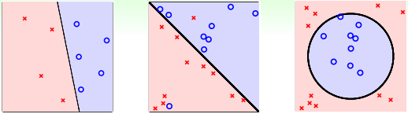
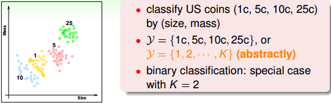
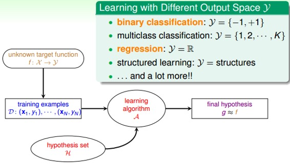
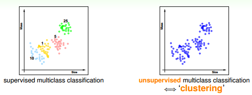
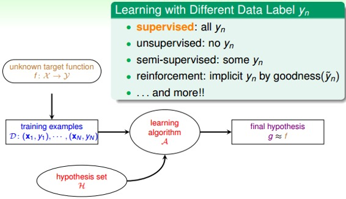
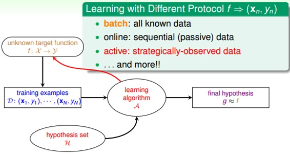
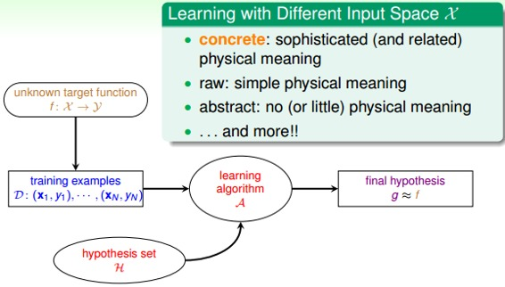
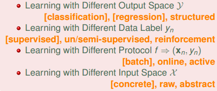

机器学习基石-笔记03
Jan 3, 2020 00:00 · 2908 words · 6 minute read
NTU林轩田的《机器学习基石》课程笔记(转载)
…
3 – Types of Learning
上节课我们主要介绍了解决线性分类问题的一个简单的方法：PLA。PLA能够在平面中选择一条直线将样本数据完全正确分类。而对于线性不可分的情况，可以使用Pocket Algorithm来处理。本节课将主要介绍一下机器学习有哪些种类，并进行归纳。
一、Learning with Different Output Space Y
我们在上节课引入的银行根据用户个人情况判断是否给他发信用卡的例子，这是一个典型的二元分类（binary classification）问题。也就是说输出只有两个，一般y={-1, +1}，-1代表不发信用卡（负类），+1代表发信用卡（正类）。
二元分类的问题很常见，包括信用卡发放、垃圾邮件判别、患者疾病诊断、答案正确性估计等等。二元分类是机器学习领域非常核心和基本的问题。二元分类有线性模型也有非线性模型，根据实际问题情况，选择不同的模型。

除了二元分类，也有多元分类（Multiclass Classification）问题。顾名思义，多元分类的输出多于两个，y={1, 2, … , K}, K>2. 一般多元分类的应用有数字识别、图片内容识别等等。

二元分类和多元分类都属于分类问题，它们的输出都是离散值。二对于另外一种情况，比如训练模型，预测房屋价格、股票收益多少等，这类问题的输出y=R，即范围在整个实数空间，是连续的。这类问题，我们把它叫做回归（Regression）。最简单的线性回归是一种典型的回归模型。
除了分类和回归问题，在自然语言处理等领域中，还会用到一种机器学习问题：结构化学习（Structured Learning）。结构化学习的输出空间包含了某种结构在里面，它的一些解法通常是从多分类问题延伸而来的，比较复杂。本系列课程不会详细介绍Structured Learning，有兴趣的读者可以自行对它进行更深入的研究。
简单总结一下，机器学习按照输出空间划分的话，包括二元分类、多元分类、回归、结构化学习等不同的类型。其中二元分类和回归是最基础、最核心的两个类型，也是我们课程主要介绍的部分。

二、Learning with Different Data Label yn
如果我们拿到的训练样本D既有输入特征x，也有输出yn，那么我们把这种类型的学习称为监督式学习（Supervised Learning）。监督式学习可以是二元分类、多元分类或者是回归，最重要的是知道输出标签yn。与监督式学习相对立的另一种类型是非监督式学习（Unsupervised learning）。非监督式学习是没有输出标签yn的，典型的非监督式学习包括：聚类（clustering）问题，比如对网页上新闻的自动分类；密度估计，比如交通路况分析；异常检测，比如用户网络流量监测。通常情况下，非监督式学习更复杂一些，而且非监督的问题很多都可以使用监督式学习的一些算法思想来实现。

介于监督式和非监督式学习之间的叫做半监督式学习（Semi-supervised Learning）。顾名思义，半监督式学习就是说一部分数据有输出标签yn，而另一部分数据没有输出标签yn。在实际应用中，半监督式学习有时候是必须的，比如医药公司对某些药物进行检测，考虑到成本和实验人群限制等问题，只有一部分数据有输出标签yn。
监督式、非监督式、半监督式学习是机器学习领域三个主要类型。除此之外，还有一种非常重要的类型：增强学习（Reinforcement Learning）。增强学习中，我们给模型或系统一些输入，但是给不了我们希望的真实的输出y，根据模型的输出反馈，如果反馈结果良好，更接近真实输出，就给其正向激励，如果反馈结果不好，偏离真实输出，就给其反向激励。不断通过“反馈-修正”这种形式，一步一步让模型学习的更好，这就是增强学习的核心所在。增强学习可以类比成训练宠物的过程，比如我们要训练狗狗坐下，但是狗狗无法直接听懂我们的指令“sit down”。在训练过程中，我们给狗狗示意，如果它表现得好，我们就给他奖励，如果它做跟sit down完全无关的动作，我们就给它小小的惩罚。这样不断修正狗狗的动作，最终能让它按照我们的指令来行动。实际生活中，增强学习的例子也很多，比如根据用户点击、选择而不断改进的广告系统
简单总结一下，机器学习按照数据输出标签yn划分的话，包括监督式学习、非监督式学习、半监督式学习和增强学习等。其中，监督式学习应用最为广泛。

三、Learning with Different Protocol f(xn,yn)
按照不同的协议，机器学习可以分为三种类型：
Batch Learning
Online
Active Learning
batch learning是一种常见的类型。batch learning获得的训练数据D是一批的，即一次性拿到整个D，对其进行学习建模，得到我们最终的机器学习模型。batch learning在实际应用中最为广泛。
online是一种在线学习模型，数据是实时更新的，根据数据一个个进来，同步更新我们的算法。比如在线邮件过滤系统，根据一封一封邮件的内容，根据当前算法判断是否为垃圾邮件，再根据用户反馈，及时更新当前算法。这是一个动态的过程。之前我们介绍的PLA和增强学习都可以使用online模型。
active learning是近些年来新出现的一种机器学习类型，即让机器具备主动问问题的能力，例如手写数字识别，机器自己生成一个数字或者对它不确定的手写字主动提问。active learning优势之一是在获取样本label比较困难的时候，可以节约时间和成本，只对一些重要的label提出需求。
简单总结一下，按照不同的协议，机器学习可以分为batch, online, active。这三种学习类型分别可以类比为：填鸭式，老师教学以及主动问问题。

四、Learning with Different Input Space X
上面几部分介绍的机器学习分类都是根据输出来分类的，比如根据输出空间进行分类，根据输出y的标记进行分类，根据取得数据和标记的方法进行分类。这部分，我们将谈谈输入X有哪些类型。
输入X的第一种类型就是concrete features。比如说硬币分类问题中硬币的尺寸、重量等；比如疾病诊断中的病人信息等具体特征。concrete features对机器学习来说最容易理解和使用。
第二种类型是raw features。比如说手写数字识别中每个数字所在图片的mxn维像素值；比如语音信号的频谱等。raw features一般比较抽象，经常需要人或者机器来转换为其对应的concrete features，这个转换的过程就是Feature Transform。
第三种类型是abstract features。比如某购物网站做购买预测时，提供给参赛者的是抽象加密过的资料编号或者ID，这些特征X完全是抽象的，没有实际的物理含义。所以对于机器学习来说是比较困难的，需要对特征进行更多的转换和提取。
简单总结一下，根据输入X类型不同，可以分为concetet, raw, abstract。将一些抽象的特征转换为具体的特征，是机器学习过程中非常重要的一个环节。在《机器学习技法》课程中，我们再详细介绍。

五、总结：
本节课主要介绍了机器学习的类型，包括Out Space、Data Label、Protocol、Input Space四种类型。

注明：
文章中所有的图片均来自台湾大学林轩田《机器学习基石》课程。